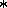

Other properties


Next: mkobj() Examples
Up: Using mkobj()
Previous: itype
There are a number of other properties attached to an indexed object
either by mkobj() or by other functions in the system.
A partial list of these property keys and the type of their values
follows. Those flagged with an asterisk are shown by the
iprop() function.
- altmetric:id-list
- --- A list of metrics to be used
instead of those in currentmetric, settable by the user with the
altmetric() function.
- conjugate:list
- --- The name (in a list) of the
conjugate object associated with a spinor. The conjugate object has
the primary object's name and a flag under this key.
- coords:id-list
- --- A copy of the coords!*
environment variable at the time the object was created (see
§2.4.1).
- cov:list
- --- The first element of the list
is the order of the derivative, the second element is the name of the
anti-derivative of this object (nil if this is the parent), the
third element is the name of the derivative of this object (nil
if it does not exist).
- description:string
- --- a description string that may
be set or examined via the function describe().
- det:aexp
- --- The value of the determinant of the
object (which must be rank-2), as computed by the det() or
determ() functions.
- div:id
- --- The name of the divergence
object, created from this object by the function div().
- indexed:id
- --- the property by which the system identifies
indexed object names. The value under this property will be one of:
array -- if all indices in indextype are array indices
tensor -- if all indices are tensor indices
frame -- if all indices are frame indices
spinor -- if all indices are either primed or unprimed
spinor indices
dyad -- if all indices are either primed or unprimed
dyad indices
scalar -- if indextype is the empty list, indicating a
scalar object
mixed -- if indextype contains more than one kind of index.
other values may appear as defined by the user (see
defindextype()).
- indextype:int-list
- --- The user-input indextype list.
- implicit:id
- --- The implicit parameter, usually the
same as the object's name.
- indices:list
- --- An internal representation derived
from the lisp:defindextype!* lists.
- multiplier:aexp
- --- A common factor, most often
non-unity for metric (or array) inverses.
- parent:id
- --- For a shifted object, this is the object from
which it was derived.
- printname:id
- --- The name used to display the
object in indexed form. This may be different from the actual object
name if the object is generic (see §4.3) or has shifted indices
(see §3.1).
- protection:int
- --- The internal format of the
protection flags, the numbers 2, 3, or 6, which correspond to
write-prtotection, kill-protection, or both; or nil for no protection.
- odf:list
- --- The list is in the same format
as for the cov property; it holds the names of ordinary derivatives.
- restricted:list
- --- A restricted indices
property, set by the user with the restrict() function.
- shift:list
- --- A list of names of shifted objects
derived from this one. Each of these objects will not have this
property, but will have the parent property instead. See
3.1 for more
details.
- symmetry:list-list
- --- The internal format of the
user input symmetry list.
- itype:any
- --- The user input itype parameter.
- tvalue:alist
- --- the association list of indices and
component values.
Next: mkobj() Examples
Up: Using mkobj()
Previous: itype
John Harper
Wed Nov 16 13:34:23 EST 1994